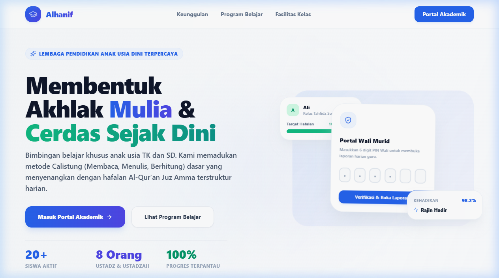

Platform Terpadu Bimbingan Belajar Calistung &
Tahfidz
Profil Produk & Solusi Manajemen Digital
Pengelolaan Bimbel Rapi, Transparan, dan Terhubung Langsung dengan Orang Tua.
Solusi sistem akademik berbasis web modern untuk lembaga bimbingan belajar anak usia dini dan sekolah dasar.
Menggantikan buku catatan fisik dan pesan WhatsApp yang tercecer menjadi satu portal pelaporan yang
profesional dan terpercaya.
1. Hafalan & Iqro Praktis
Pencatatan setoran ayat cepat, Mushaf digital, dan mutabaah Iqro otomatis.
2. Raport PDF Resmi
Penerbitan raport terstandar siap unduh dan cetak berkop lembaga Anda.
3. Kontrol SPP & Presensi
Monitoring kas SPP bulanan serta rekap absensi harian kelas dalam 1 layar.
Dalam mengelola bimbingan belajar anak, menjaga kualitas pengajaran dan kepuasan orang tua sering kali terganggu
oleh beban administrasi harian yang menyita tenaga:
Buku Setoran &
Absensi Rentan Hilang
Ketika buku mutabaah fisik anak tertinggal di rumah, rusak, atau guru pengganti masuk, riwayat capaian anak
tidak bisa dicek. Evaluasi menjadi terhambat dan tidak konsisten.
Guru Lelah Mengetik
Laporan WA Tiap Malam
Orang tua ingin tahu anak mereka sudah sampai mana. Guru kehabisan waktu istirahat karena harus mengetik
pesan laporan satu per satu ke puluhan nomor orang tua.
Tunggakan SPP Sulit
Terpantau Jelas
Pencatatan kas di buku tulis membuat pengelola ragu siapa yang sudah lunas dan siapa yang menunggak bulan
berjalan, berisiko mengganggu kelancaran arus kas bimbel.
Pembuatan Raport
Semesteran Sangat Lama
Setiap akhir semester guru lembur mengetik raport manual di komputer. Format antar kelas sering tidak
seragam dan memakan waktu berhari-hari.
Bagaimana Alhanif Membantu Lembaga Anda
Semua Data Terpusat, Rapi, dan Mudah Diakses
Aplikasi ini memindahkan seluruh pencatatan dari kertas dan chat WhatsApp ke satu tempat kerja digital yang bisa
dibuka lewat HP pengajar maupun wali murid:
Untuk
Pengelola (Owner)
Memantau seluruh kelas, rekap murid
aktif, dan status bayar SPP bulanan tanpa harus menanyai guru satu per satu.
Untuk Guru / Ustadz
Input absensi kelas, setoran
hafalan, mutabaah Iqro, hingga terbit raport resmi langsung dari HP dalam hitungan menit.
Untuk Orang Tua
(Wali)
Melihat riwayat kemajuan anak kapan
saja secara transparan dan mengunduh raport digital resmi format PDF dari rumah.
Komitmen Kami: Sistem ini tidak mengubah kurikulum maupun ciri khas pengajaran di lembaga Anda.
Sistem ini hanya menertibkan administrasi agar guru Anda dapat fokus penuh mendampingi santri belajar.
A Alhanif
2. Tampilan Antarmuka Aplikasi
Mudah Digunakan Tanpa Aplikasi Berat
Antarmuka Bersih, Ringan, dan Nyaman di Layar HP
Pengguna di lembaga Anda (baik guru sepuh maupun orang tua) tidak perlu mengunduh aplikasi berat dari Play Store.
Cukup membuka tautan website melalui peramban HP (Chrome atau Safari) dan sistem langsung siap digunakan.

Tampilan Portal Utama Lembaga: Halaman muka representatif yang menampilkan identitas bimbel
Anda, ringkasan program belajar, serta tombol masuk akun bagi guru, wali murid, dan pengelola.
Akses Masuk Aman & Otomatis: Setiap pengguna masuk menggunakan akun terdaftar. Sistem secara
cerdas mengarahkan hak akses sesuai peran masing-masing (Owner, Pengajar, atau Wali).
A Alhanif
3. Program Pembelajaran Terarah
Struktur Akademik Terintegrasi
Dua Kurikulum Inti: Calistung & Tahfidz
Arsitektur aplikasi dibangun khusus menyesuaikan kurikulum bimbingan belajar anak di Indonesia, memadukan
kemandirian literasi membaca Al-Qur'an dengan kesiapan akademik sekolah dasar:
Nilai Unggulan yang Dirasakan Klien: Transparansi rekap harian, keamanan data anak,
standarisasi penilaian, dan kemudahan akses laporan kapan saja bagi wali murid.
Fleksibilitas Program: Mendukung kelas Calistung (Membaca, Menulis, Berhitung) serta kelas
Tahfidz Qur'an (Surat Pendek, Juz 'Amma, dan Hafalan Al-Qur'an Berkelanjutan).
A Alhanif
4. Fitur Khusus Tahfidz & Iqro
Kemudahan Mengajar di Kelas
Pencatatan Hafalan Cepat & Terstruktur
Fitur-fitur ini dirancang khusus agar ustadz/ustadzah dapat mencatat setoran anak tanpa memecah konsentrasi saat
menyimak bacaan santri:
Guru mencatat kemajuan hafalan santri per surah dan nomor ayat, atau per juz. Dilengkapi tombol cepat +1
Ayat dan +1 Halaman sehingga rekap setoran selesai dalam 3 detik. Aplikasi juga menyediakan
Mushaf Viewer digital langsung di layar HP guru sebagai panduan menyimak tanpa perlu membawa
mushaf fisik terpisah.
2
Mutabaah Bacaan Iqro & Aisar
Siap Digunakan
Bagi santri pemula yang belum masuk Al-Qur'an, aplikasi mencatat jilid 1–6 dan halaman buku Iqro/Aisar. Sistem
memiliki kelanjutan otomatis (smart continuation) yang langsung menampilkan posisi jilid dan
halaman terakhir santri, disertai catatan tingkat kelancaran (Perlu Bimbingan, Cukup, Lancar, Sangat Mahir).
3
Presensi Kelas Cepat (Satu Klik untuk Semua)
Siap Digunakan
Menghemat waktu absensi kelas yang biasanya berlarut-larut. Guru cukup menekan tombol "Tandai Semua
Hadir", lalu mengubah santri yang berhalangan menjadi Izin (I) atau Alpha (A). Data langsung terekam rapi
per tanggal dan otomatis membentuk persentase kehadiran bulanan.
Manfaat Nyata: Guru Anda menghemat waktu administrasi hingga 80%. Waktu belajar santri menjadi
lebih efektif dan tidak terpotong oleh urusan menulis buku absensi manual.
A Alhanif
5. Fitur Calistung & Komunikasi Wali
Pendampingan Usia Dini
Evaluasi Calistung & Keamanan Data Wali
Mendukung pemantauan motorik dan perkembangan kognitif anak secara detail serta menjaga privasi komunikasi antara
guru dan orang tua:
4
Penilaian Calistung Tiga Dimensi Terstandar
Siap Digunakan
Mencakup instrumen evaluasi lengkap: Membaca (pengenalan huruf, mengeja suku kata),
Menulis (motorik halus, ketepatan garis, cara memegang pensil), dan Berhitung
(pengenalan angka, penjumlahan sederhana). Penilaian disajikan dengan skala kualitatif ramah anak (Mulai,
Sedang, Lancar).
5
Catatan Personal Guru & Proteksi Kunci PIN Wali 6-Digit
Siap Digunakan
Guru dapat menulis catatan evaluasi perilaku atau pesan khusus terkait anak. Untuk menjamin kerahasiaan catatan
personal tersebut, sistem menyediakan fitur kunci keamanan PIN 6-digit yang wajib dimasukkan
orang tua sebelum membaca isi catatan guru.
6
Distribusi Modul & Media Belajar (LMS Sederhana)
Siap Digunakan
Guru dapat membagikan lembar kerja (worksheet PDF), tautan video panduan makhraj huruf, maupun materi artikel
terformat langsung ke akun murid. Murid dan orang tua dapat mengulang pelajaran dengan nyaman dari rumah.
Kepercayaan Orang Tua: Orang tua merasa sangat tenang karena catatan mengenai kekurangan atau
kebutuhan khusus anaknya tersimpan privat dan hanya dapat dibuka oleh wali sah pemegang PIN.
A Alhanif
6. Raport Digital & Kontrol Keuangan
Hasil Belajar & Pengawasan Kas
Raport Otomatis PDF A4 & Monitoring SPP
Dua modul penentu citra profesional dan kesehatan keuangan bimbingan belajar Anda:
7
Penerbitan Raport Digital & Unduh Dokumen PDF Resmi
Siap Digunakan
Guru cukup memasukkan narasi evaluasi akhir dan capaian nilai. Raport resmi terbit secara otomatis lengkap
dengan kop lembaga Anda, dan dapat langsung diunduh wali santri dalam bentuk file PDF standar
A4 yang rapi, siap dicetak maupun diarsipkan di smartphone.
8
Monitoring Pembayaran SPP Bulanan & Kas Murid
Siap Digunakan
Dashboard khusus pemilik bimbel yang menyajikan daftar murid per kelas beserta status tagihan SPP. Anda dapat
langsung mengetahui siapa yang sudah lunas dan siapa yang masih menunggak dalam satu layar tanpa perlu memeriksa
tumpukan nota kwitansi.
9
Pemberitahuan Otomatis WhatsApp ke Nomor Orang Tua
Tahap Integrasi Gateway
Arsitektur dan template pesan otomatis (laporan kehadiran dan setoran santri) telah tersedia di sistem. Saat ini
modul sedang dalam tahap integrasi gateway pengiriman WhatsApp agar pengiriman pesan ke wali berjalan otomatis
dan hemat biaya.
A Alhanif
7. Alur Kerja & Nilai Keunggulan
Alur Penggunaan Praktis
Mudah Dimulai dari Hari Pertama
1
Pendaftaran Lembaga & Kelas
Admin mendaftarkan nama bimbel, mengelompokkan kelas (contoh: Tahfidz Pagi, Calistung Sore), serta
menentukan guru pengampu.
2
Aktivasi Akun Guru & Santri
Akun dibagikan ke guru dan wali murid. Akses langsung melalui peramban HP tanpa instalasi aplikasi yang
membebani memori.
3
Pencatatan Presensi & Hafalan Rutin
Setiap sesi mengajar, guru mencentang kehadiran dan menginput capaian hafalan/Iqro dalam 2–3 menit per
kelas.
4
Laporan & Raport Otomatis
Orang tua memantau perkembangan harian dari rumah, dan mengunduh raport resmi berformat PDF pada akhir
semester.
Perbandingan Nyata
Sebelum vs Sesudah Menggunakan Sistem
Kegiatan
Cara Lama (Kertas & WA Manual)
Dengan Alhanif
Absensi Murid
Mencentang buku tulis; rekap bulanan dihitung manual satu per satu.
1 klik "Tandai Semua Hadir", rekap persentase otomatis terhitung.
Mutabaah Hafalan
Ditulis di buku saku anak; rawan tertinggal, kotor, atau hilang.
Tercatat di akun anak, dilengkapi Mushaf digital & riwayat per juz.
Laporan ke Orang Tua
Ketik pesan WA satu-satu atau menunggu rapat akhir semester.
Wali login mandiri kapan saja melihat capaian belajar real-time.
Penerbitan Raport
Ketik manual di Word/Excel berhari-hari menjelang akhir tahun.
Terbit otomatis dari aplikasi dan diunduh jadi file PDF A4 resmi.
Monitoring SPP
Buku catatan kas rawan terlewat atau lupa tertagih.
Penyaringan jelas santri lunas vs belum bayar dalam satu layar.
A Alhanif
8. Model Kemitraan Ramah Anggaran
Solusi Investasi Tanpa Risiko
Skema Kerja Sama Fleksibel & Sharing Profit
Kami memahami bahwa membangun aplikasi sendiri dari nol membutuhkan biaya besar (puluhan juta rupiah), belum
termasuk biaya sewa server bulanan dan biaya tenaga IT. Melalui kemitraan Alhanif, lembaga Anda dapat
langsung menikmati teknologi ini dengan risiko minimal:
Prinsip Kemitraan: Bertumbuh
Bersama Lembaga Anda
Lembaga Anda tidak dibebani biaya pembuatan software di awal. Kami menerapkan model kerja sama yang adaptif
(seperti bagi hasil / sharing profit atau biaya terjangkau berbasis jumlah santri aktif). Jika santri Anda
sedikit di awal, biaya operasional sistem tetap sangat ringan dan proporsional.
Keuntungan untuk Lembaga Anda:
Langsung siap pakai tanpa harus menunggu pembuatan berbulan-bulan.
Bebas biaya pemeliharaan server, keamanan database, dan backup rutin.
Mendapatkan pembaruan fitur sistem secara berkala tanpa biaya tambahan.
Tiga Pilihan Format Kemitraan:
Skema Bagi Hasil (Sharing Profit): Berdasarkan porsi iuran SPP santri.
Skema Langganan Terjangkau: Tarif flat per murid aktif per bulan.
Kemitraan Lisensi Yayasan: Untuk lembaga dengan banyak cabang/TPQ.
Keterbukaan Diskusi: Angka dan formula pembagian hasil dirumuskan bersama dengan mengutamakan
keberlangsungan finansial lembaga Anda. Kami siap duduk bersama untuk mendiskusikan angka yang paling masuk akal
bagi bimbel Anda.
A Alhanif
9. Kustomisasi & Tanya Jawab
Dapat Disesuaikan dengan Karakter Lembaga
Kustomisasi Branding & Tata Tertib Bimbel
Setiap lembaga memiliki keunikan tersendiri. Arsitektur sistem kami terbuka untuk penyesuaian khusus dengan
biaya yang sangat terjangkau:
Logo & Kop Surat
Lembaga
Menyesuaikan nama portal bimbel, logo
resmi, dan kop surat resmi pada lembar raport digital.
Format Indikator
Penilaian
Menyesuaikan kriteria nilai hafalan,
tajwid, atau calistung agar sejalan dengan standar yayasan Anda.
Pengembangan Fitur
Khusus
Dapat didiskusikan penambahan modul
khusus seperti formulir pendaftaran santri baru atau kalender ujian.
Pertanyaan yang Sering Diajukan
Tanya Jawab Seputar Penggunaan (FAQ)
Apakah guru sepuh atau orang tua yang kurang mengerti teknologi bisa menggunakannya?
Sangat bisa. Tampilan aplikasi dirancang sangat sederhana dengan tombol yang besar dan
jelas. Guru hanya perlu memilih nama anak dan mengklik status hadir atau setoran hafalan tanpa pengaturan
teknis yang membingungkan.
Apakah data santri kami aman dan terpisah dari lembaga lain?
Dijamin aman. Sistem database menggunakan keamanan Row Level Security (RLS)
yang memisahkan hak akses data setiap lembaga secara ketat. Pihak luar atau bimbel lain tidak dapat melihat
data santri Anda.
Apakah kami dapat mencoba akun simulasi (demo) terlebih dahulu?
Tentu saja. Kami telah menyiapkan akun demo lengkap dengan simulasi data guru, murid,
dan raport agar Bapak/Ibu dapat mencoba alur penggunaannya secara langsung sebelum memutuskan kerja sama.
Bagaimana jika terjadi kendala teknis saat aplikasi digunakan?
Lembaga Anda tidak perlu repot. Seluruh pemeliharaan teknis, perbaikan gangguan, dan
kelancaran server didukung penuh oleh tim teknis kami.
A Alhanif
10. Konsultasi & Kontak Kemitraan
Langkah Berikutnya
Mari Jadwalkan Sesi Demo Gratis
Modernisasi administrasi bimbel bukan tentang membuat proses belajar menjadi rumit, melainkan memberikan
kepastian, kerapian, dan rasa bangga bagi guru, murid, serta orang tua di lembaga Anda.
Kami mengundang Bapak/Ibu pimpinan pengelola bimbel untuk berdiskusi santai, melihat demo langsung di layar
smartphone, dan mendiskusikan format kerja sama terbaik bagi lembaga Anda.
Saluran
Komunikasi Resmi Konsultasi Lembaga
WhatsApp Diskusi & Demo
[085364932661 / Tim Resmi]
Email Resmi Kemitraan
hello@uay.com
Pengembang Teknologi
UAY Studio
Tautan Akses Portal Demo
alhanif.online
Tanpa Komitmen Awal: Bapak/Ibu bebas berkonsultasi dan mencoba akun demo terlebih dahulu untuk
memastikan sistem ini benar-benar cocok dengan kebutuhan bimbel Anda.